25ste Marathon gezellig en sfeervol verlopen...
- dinsdag 09 december 2008 11:02
- Geschreven door Joachim
Gisteren werd in Rotterdam de 25ste Marathon gelopen. Dit jaar waren er 11.600 deelnemers in totaal. Zij legden een afstand af van 42 kilometer tussen de Coolsingel en de Coolsingel. Dit natuurlijk met een lang parcours, dat zoals ieder jaar via Rotterdam Noord, Zuid en Oost voerde. Tegelijkertijd werd de 'RTV Rijnmondloop' gehouden, hieraan namen 6000 mensen deel. Dit parcours van 10 km voerde door het centrum van Rotterdam, vanaf de Coolsingel via de Blaak, Warande en de Boezemstraat, waarna retour.
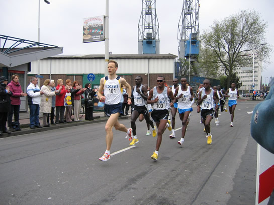
De ploeg met de toplopers. Hillelaan Rotterdam Zuid, nabij metrostation Rijnhaven.
Een evenement als de Marathon brengt een grote mensenstroom met zich mee. Dit jaar werd echter de 25ste Marathon gelopen en werd er gerekend op een toeschouwersaantal van 500.000. Echter, door het mindere weer in de ochtenduren werd dit aantal niet gehaald. Toch was het druk, met name wanneer de grote drukte zich verplaatste met de metro.
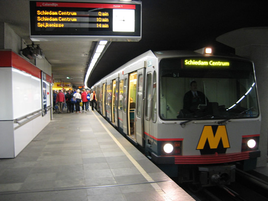
Wagendienst 61, 9.00 uur 's morgens. Deze wagendienst werd verlengd tot driewagentrein i.v.m. de drukte.
In verband met de drukte werd er op het metronet een aangepaste (op zondagsdienst gebaseerde) dienstregeling gereden. Rond 8.30 uur was de drukte op stations Capelsebrug en Kralingse Zoom al merkbaar. Een metrodienst met twee rijtuigen kreeg de mensenstroom met moeite mee. Hierop werd besloten alle wagendiensten bestaande uit twee rijtuigen, te verlengen naar driewagentreinen. Dit gebeurde tussen 9.00 uur en 10.00 uur.
Ook op de Erasmuslijn werd zoals ieder jaar grote drukte verwacht, daarom reden er 11 wagendiensten bestaande uit vier rijtuigen. Dit was niet afdoende om de mensenstroom te vervoeren. Bij tijden van grote drukte werden drie extra wagendiensten ingezet, vanaf resp. keerspoor Slinge of emplacement Waalhaven. De drie extra diensten werden genummerd als 997, 998 en 999, waarbij alleen wagendienst 999 uit een driewagentrein bestond, de rest uit vierwagentreinen.
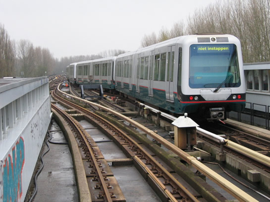
Wagendienst 997 rijdt het keerspoor op om daar te blijven staan en in dienst te gaan wanneer nodig.
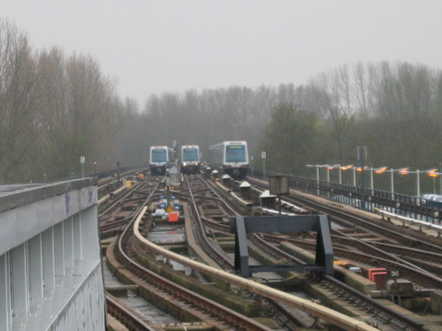
Wagendienst 997 en 999 op de opstelsporen van Slinge. Een metrodienst richting Spijkenisse passeert op spoor 2.
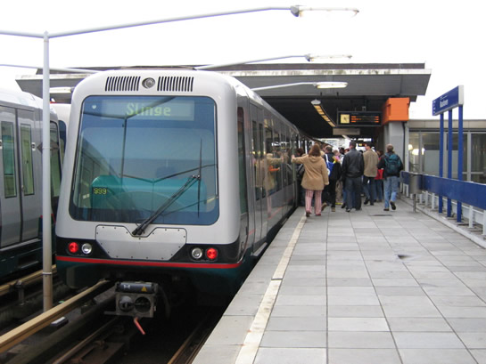
Extra wagendienst 999, station Maashaven spoor 2.
Op de Calandlijn was de drukte ook groter dan verwacht. Op station Beurs spoor 2 werd het perron té vol. Dit leidde ertoe dat personeel van metrobeheer de mensen in de hal van station Beurs korte tijd tegen moesten houden. Ook het in- en uitstappen werd op station Beurs begeleid door mensen van metrobeheer, waarbij zelfs via de stations-intercom de mensenmassa werd aangesproken op het instapgedrag.
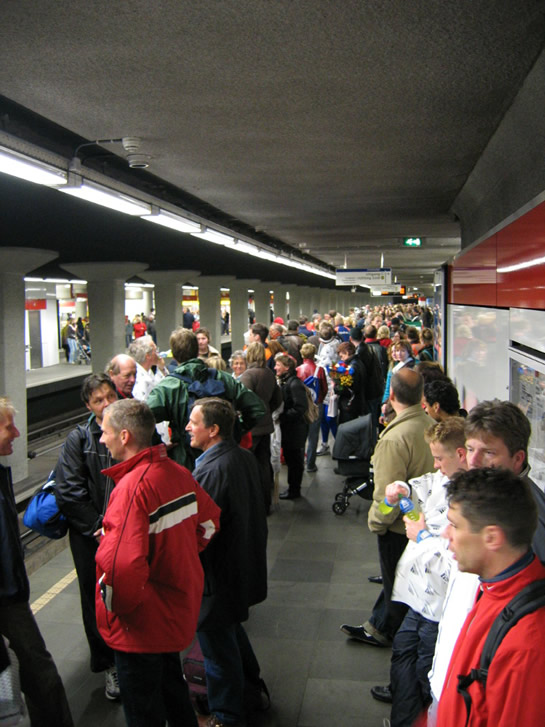
Grote drukte op station Beurs. Uiteindelijk werden deze mensen állemaal vervoerd, al kon het wachten op een legere metro wel lang duren.
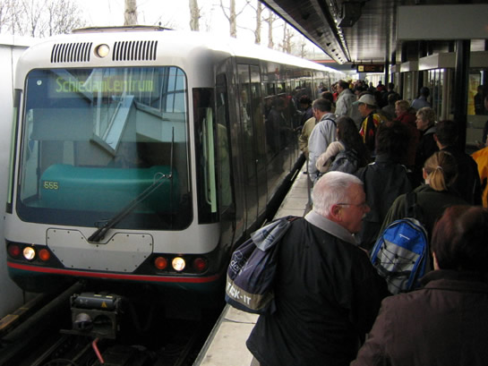
Station Kralingse Zoom spoor 1. Wagendienst 555 op weg naar Schiedam.
Ook op de Calandlijn werden extra metrodiensten ingezet, namelijk wagendienst 521, 522 en 523(allen bestaande uit drie rijtuigen Type T). Deze werden bij tijden van drukte ingezet vanaf emplacement 's-Gravenweg of vanaf Marconiplein spoor 3. Zij onderhielden een pendeldienst tussen station Marconiplein of Schiedam Centrum en station Capelsebrug, alwaar werd gekeerd op spoor 5 om zo retour te gaan richting Schiedam. Dit zonder passagiers.
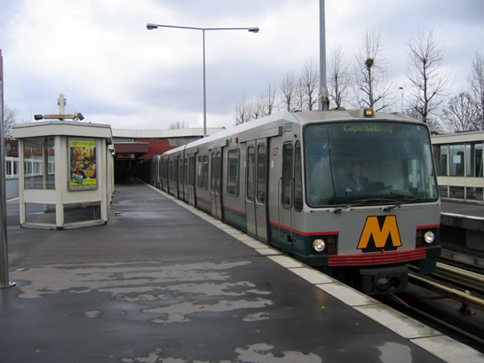
Extra wagendienst 521, deze onderhield een pendeldienst tussen stations Marconiplein en Capelsebrug.
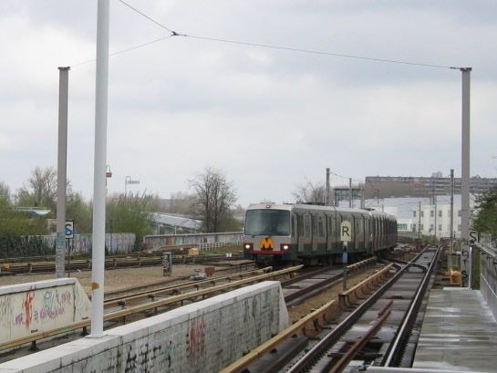
Er werd gekeerd op Capelsbrug spoor 5, hierna werd koers gezet richting Schiedam, zónder passagiers.
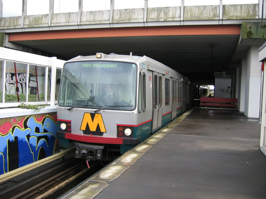
Extra wagendienst 522, buiten dienst. Station Kralingse Zoom.
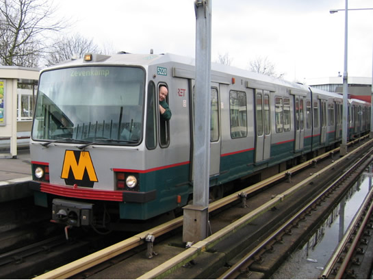
En deze wagendienst reed gewoon naar 'de wijken'. Rijtuig 5220 inclusief bestuurder op station Kralingse Zoom spoor 2.
In tegenstelling tot de dienstregeling bij de Marathon van 2004, werd er niet afgekoppeld/gesplitst op station Slinge. Alle metrodiensten die rond 18.00 uur eindbestemming Slinge hadden, werden vanaf spoor 2 buiten dienst gesteld en richting emplacement Waalhaven gereden. Dit werd gedaan omdat in de huidige dienstregeling zowel doordeweeks als in het weekend geen metroritten naar Slinge worden gereden in de avonduren.
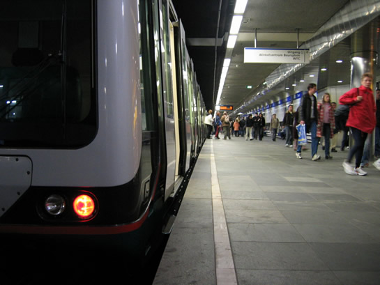
Aan het eind van de middag was de drukte al minder. Station Beurs spoor 1.
Helaas werden er geen extra rijtuigen Type T ingezet op de Erasmuslijn, dus dit jaar geen unieke plaatjes van vierwagentreinen van deze soort op het tracé tussen Centraal Station en Slinge. Toch kunnen de foto's van vorig jaar nog bekeken worden.
 Nieuwsitem Marathon 2004 Deel 1
Nieuwsitem Marathon 2004 Deel 1
 Nieuwsitem Marathon 2004 Deel 2
Nieuwsitem Marathon 2004 Deel 2
Ondanks de drukte hing er weer een gezellige sfeer op en rond de Marathon. Retmetro.nl wil bij deze alle lopers feliciteren met hun persoonlijk record tijdens de Marathon of de RTV Rijnmondloop! Op naar de 26ste Marathon in 2006!